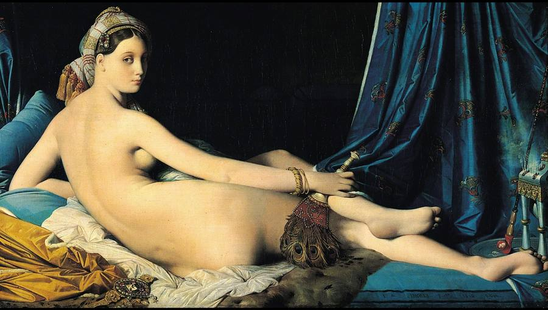
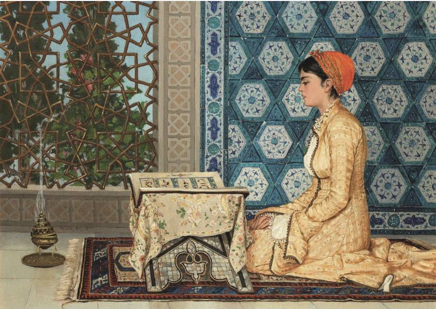

Orientalism: Between Fact and Fantasy, at the Met
יש תערוכות שאתה יוצא מהן עם רשימת יצירות שאהבת.
ויש תערוכות שאתה יוצא מהן עם דרך חדשה להסתכל.
זו אחת מהן.
לפני כשבועיים נפתחה במטרופוליטן לראשונה בהיסטוריה תערוכה שעוסקת כולה ברעיון האוריינטליזם: האופן שבו אמנים אירופים במאה ה־19 דמיינו, תיארו וציירו את "המזרח" (המזרח התיכון, צפון אפריקה וחלקים מאסיה). אנשי תרבות ומחקר הוקסמו מהאוריינט, אבל גם יצרו דימוי של מזרח אקזוטי, מסתורי, חושני, ולעיתים גם פראי. לא פעם, הדימוי הזה סיפר לא פחות על אירופה מאשר על המזרח עצמו, שכן הוא שיקף את הסקרנות, הפנטזיות ויחסי הכוח של התקופה, וגם את הדרך שבה אירופה בחרה לראות את ה"אחר". כי בסופו של דבר, כל מבט מספר סיפור לא רק על מה שרואים, אלא גם על מי שמסתכל.
בזמן שהסתובבתי בין העבודות, הראש שלי בכלל נדד הביתה. לשוק מחנה יהודה ולעיר העתיקה בירושלים עיר ילדותי, לאריחים הצבעוניים של יפו והנגב, ולאור השמש הלוהטת והמסנוורת של ישראל. כל מה שעל הקירות כבר לא הרגיש כמו דימוי של מקום רחוק. הוא הרגיש מוכר. לא כי זו הייתה המציאות שלי, אלא כי בחלקם נשקפו מהם שברי נוף שגדלתי לצדם, והם עדיין חיים בזכרון שלי.
זה הביא אותי להרהר בשם התערוכה: Between Fact and Fantasy. פתאום הוא הרגיש כמו הרבה יותר מכותרת.
התערוכה לא מנסה להכריע אם האוריינטליזם היה אמת או פנטזיה, הערכה או התנשאות. היא מראה שכל אלה התקיימו יחד. היא בוחנת את מערכת היחסים המורכבת בין אירופה למזרח בתקופה שבה קולוניאליזם, מסחר, מסעות, התפתחויות טכנולוגיות וחילופי רעיונות התקיימו במקביל והשפיעו זה על זה.
אחד הרגעים שהכי אהבתי היה המפגש עם עבודותיו של עוסמאן חמדי ביי (למעלה), אמן עות'מאני שלמד ציור בפריז בצעירותו, אבל חזר לאיסטנבול וצייר שם את רוב יצירותיו. בשונה מאמנים אירופאים שציירו את המזרח מבחוץ, לפעמים מבלי שביקרו בו כלל, הוא השתמש באותה שפה אמנותית אירופית שספג בפריז כדי לצייר את עולמו שלו.
ברגע הזה כבר אי אפשר לדבר רק על השאלה מי הסתכל על מי. הגבולות מתחילים להתערער.
פתאום כבר אין רק מערב שמביט במזרח.
גם המזרח מתחיל להביט חזרה.
בסופו של דבר, הבנתי שזו לא תערוכה על המזרח.
זו תערוכה על מבטים.
🖼️ Orientalism: Between Fact and Fantasy
📅📍 The Metropolitan Museum of Art
עד 28.2.2027
אחד האמנים המזוהים ביותר עם האוריינטליזם הוא הצייר הצרפתי ז'אן-אוגוסט-דומיניק אנגר. למרות שמעולם לא ביקר במזרח התיכון, הוא בנה את דימוי ה"אוריינט" שלו מתוך דמיון, ספרות וחפצים שהכיר בפריז.
בציורו La Grande Odalisque (1814) הוא מציג אישה עירומה השוכבת בהרמון דמיוני, מוקפת בדים יוקרתיים, מקטרת ומניפה. זה אינו ניסיון לתעד מציאות, אלא פנטזיה אירופית על המזרח.
לעומתו, הנשים של עוסמאן חמדי ביי אינן מצוירות כמושא למבט הגברי. הן קוראות, לומדות, מתפללות ועוסקות בחיי היומיום. הדמויות המרכזיות בסיפור שלהן.
אותה שפה אמנותית. אותה תקופה. אבל השאלה "מי מצייר?" משנה הכל


There are exhibitions you leave with a list of works you loved.
And there are exhibitions you leave with a new way of looking.
This is one of those.
About two weeks ago, the Metropolitan opened, for the first time in its history, an exhibition devoted entirely to the idea of Orientalism: the way European artists of the 19th century imagined, described, and painted "the East" (the Middle East, North Africa, and parts of Asia). People of culture and scholarship were fascinated by the Orient, but they also created an image of an East that was exotic, mysterious, sensual, and at times wild. Often, that image said no less about Europe than about the East itself, since it reflected the curiosity, the fantasies, and the power relations of the era, and also the way Europe chose to see the "other". Because in the end, every gaze tells a story not only about what is seen, but also about who is looking.
While I wandered among the works, my mind actually drifted home. To the Mahane Yehuda market and the Old City of Jerusalem, the city of my childhood, to the colorful tiles of Jaffa and the Negev, and to the blazing, blinding sunlight of Israel. Everything on the walls no longer felt like an image of a faraway place. It felt familiar. Not because it was my reality, but because some of the works reflected fragments of landscapes I grew up beside, and they still live in my memory.
That led me to reflect on the exhibition's title: Between Fact and Fantasy. Suddenly it felt like far more than a title.
The exhibition does not try to decide whether Orientalism was truth or fantasy, appreciation or condescension. It shows that all of these existed together. It examines the complex relationship between Europe and the East in a period when colonialism, trade, travel, technological developments, and the exchange of ideas ran in parallel and shaped one another.
One of the moments I loved most was the encounter with the works of Osman Hamdi Bey (above), an Ottoman artist who studied painting in Paris in his youth, but returned to Istanbul and painted most of his works there. Unlike European artists who painted the East from the outside, sometimes without ever having visited it, he used the very European artistic language he absorbed in Paris to paint his own world.
At that moment you can no longer speak only about the question of who was looking at whom. The boundaries begin to blur.
Suddenly it is no longer only the West gazing at the East.
The East begins to gaze back.
In the end, I understood that this is not an exhibition about the East.
It is an exhibition about gazes.
🖼️ Orientalism: Between Fact and Fantasy
📅📍 The Metropolitan Museum of Art
Through February 28, 2027
One of the artists most identified with Orientalism is the French painter Jean-Auguste-Dominique Ingres. Although he never visited the Middle East, he built his image of the "Orient" out of imagination, literature, and objects he knew in Paris.
In his painting La Grande Odalisque (1814) he presents a nude woman reclining in an imaginary harem, surrounded by luxurious fabrics, a pipe, and a fan. It is not an attempt to document reality, but a European fantasy of the East.
By contrast, the women of Osman Hamdi Bey are not painted as objects of the male gaze. They read, study, pray, and go about everyday life. They are the central figures of their own story.
The same artistic language. The same period. But the question "who is painting?" changes everything